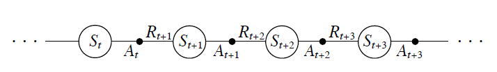
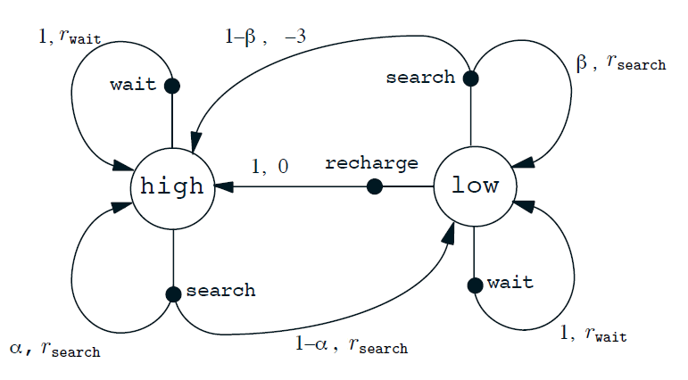
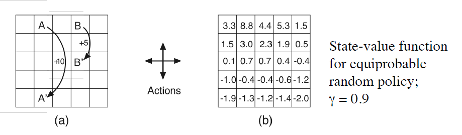
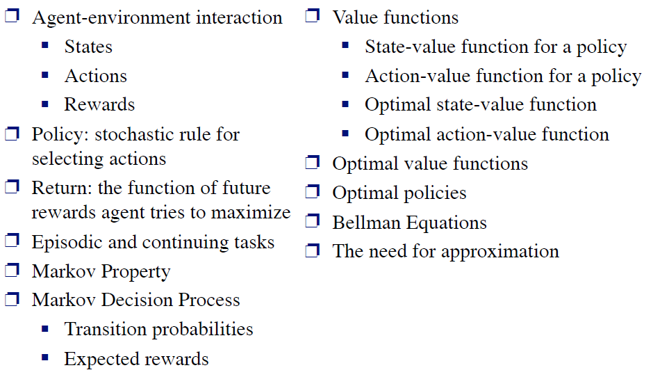

- Markov Decision Process
- Introduce Key Components of the Mathematics: Value Functions and Bellman Equations

Agent observation state at time t: St
Action at step t: At∈A(St)
Reward: Rt+1∈ℜ⊂R
Result next state: St+1∈S+

- If the reinforcement learning task has a Markov Property, it is basically a Markov Decision Process (MDP).
- If state and action is finite, it is a finite MDP
- To define a finite MDP, you need to give:
- state and action sets
- One-step "dynamics"
p(s′,r∣s,a)=Pr{St+1=s′,Rt+1=r∣St=s,At=a}
p(s′∣s,a)≐Pr{St+1∣St=s,At=a}=r∈R∑p(s′,r∣s,a)
r(s,a)≐E[Rt+1∣St=s,At=a]=r∈R∑rs′∈S∑p(s′,r∣s,a)
Policy at step t: πt(a∣s)Probability that At=a when St=s
- Agent's goal is to get as much reward as it can over the long run.
- Actions:
- Actively search a can
- wait for someone bring it a can
- go home and recharge
- Energy level: High, Low
- Reward: number of cans collected
S={high,low}A(high)={search,wait}A(low)={search,wait,recharge}

- By "the state" at step t, the book means whatever information is available to the agent at step t about its environment.
- Ideally, a state should summarize past sensations so as to retain all "essential" information, i.e., it should have the Markov Property:
==Pr{Rt+1=r,St+1=s′∣S0,A0,R1,…,St−1,At−1,Rt,St,At}p(s′,r∣s,a)Pr{Rt+1=r,St+1=s′∣St,At}
The Meaning of Life (goals, rewards, and returns)
Rewards and returns
- Maximize long-tern future reward
- ChooseAt so as to maximizeRt+1,Rt+2,Rt+3,…
- Discounted return at time t
Gt=Rt+1+γRt+2+γ2Rt+3+γ3Rt+4+…(γ∈[0,1))
- The value of a state, given a policy
vπ(s)=E{Gt∣St=s,At:∞∼π}
- The value of a state-action pair, given a policy
qπ(s,a)=E{Gt∣St=s,At=a,At+1:∞∼π}
- The optimal value of a state
v∗(s)=πmaxvπ(s)
- The optimal value of a state-action pair
q∗(s,a)=πmaxqπ(s,a)
- Optimal policy: π∗ is an optimal policy if and only if
π∗(a∣s)>0 where q∗(s,a)=bmaxq∗(s,b)

- For finite MDPs, Policies can be partically ordered:
π≥π′ if and only ifvπ(s)≥vπ′(s) for all s∈S
- Optimal Policies: π∗
This is the expected return for taking action a in state s and thereafter following an optimal policy.
Any policy that is greedy with respect to v∗is an optimal policy
π∗(s)=argamaxq∗(s,a)
The basic idea:
Gt=Rt+1+γRt+2+γ2Rt+3+…=Rt+1+γ(Rt+2+γRt+3+…)=Rt+1+γGt+1
So:
vπ(s)=Eπ{Gt∣St=s}=Eπ{Rt+1+γvπ(St+1)∣St=s}
Or, without expectation operator:
vπ(s)=a∑π(a∣s)s′,r∑p(s′,r∣s,a)[r+γvπ(s′)]
Bellman Optimaltiy Equation for v∗ and q∗
The value of a state under an optimal policy must equal the expected return for the best action from the state:
v∗(s)=amaxqπ∗(s,a)=amaxE[Rt+1+γv∗(St+1)∣St=s,At=a]=amaxs′,r∑p(s′,r∣s,a)[r+γv∗(s′)]
q∗(s,a)=E[Rt+1+γa′maxq∗(St+1,a′)∣St=s,At=a]=s′,r∑p(s′,r∣s,a)[r+γa′maxq∗(s′,a′)]
- Finding an optimal policy by solving the bellman optimality equation requires the followings：
- accurate knowledge of environment dynamics
- we have enough space and time to do the computation
- the Markov Property
- How much space and time do we need
- polynomial in number of state
- BUT number of state is huge
- We usually have to settle for approximations
- RL can be understood as approximately solving the bellman optimality equation
